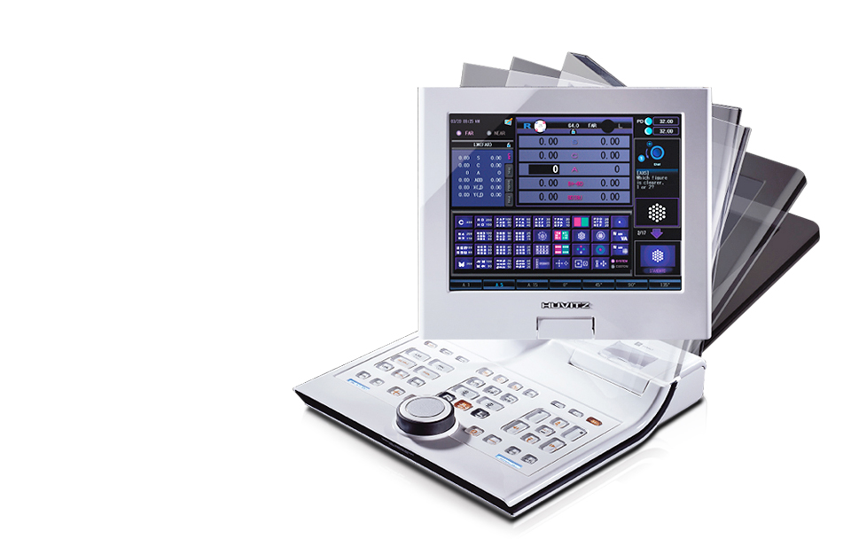

HDR-7000
(검안용굴절력측정기)
디자인과 파워풀한 성능으로 고객을 리드한다.
휴비츠 디지털 리프렉터 HDR-7000
이 제품은 의료기기이며, 사용상의 주의사항과 사용방법을 잘 읽고 사용하십시오.
(심의번호: 2013-I10-04-1442)

- 


제품소개
- 실시간 검안 가이드
- 화면상에 실시간 가이드와 도움말이 표시되며 필요한 정보를 그림으로 제공하여 검안을 쉽고 빠르게 안내합니다.
- 다양한 이미지클립 제공
- 암슬러격자, 각종 근용시표, 색각검사 등 많은 이미지클립의 제공으로 피검자의 이해를 도와줍니다.
- 듀얼 크로스 실린더 렌즈 제공
- 일반 잭슨 크로스 실린더 렌즈뿐 아니라 듀얼 크로스 실린더 렌즈를 제공, 난시 축 및 도수 검사를 더욱 쉽고 정밀하게 할 수 있습니다.
- 편리한 터치스크린
- 터치 인터페이스를 통한 조작이 가능해 기계 조작이 익숙하지 않아도 쉽게 검안을 진행할 수 있습니다.
제품사양
| 측정 범위 | |
|---|---|
| 구면 렌즈 |
|
| 원주 렌즈 | 0.00~±8.75D (0.25D / 0.5D / 1D / 2D / 3D 단위) |
| 원주 축 | 0º ~ 180º (1º / 5º / 15º 단위) |
| PD |
|
| 로터리 프리즘 | 0~20Δ (0.1Δ/ 0.2Δ/ 0.5Δ/ 1Δ/ 2Δ 단위) |
| 크로스 실린더 | ±0.25D / ±0.50D / ±0.25D 듀얼 크로스 실린더 (Split Prism Lens) |
| Retinoscope | +1.5D, +2.0D (검사거리 67cm, 50cm) |
| 보조 렌즈 | |
| 핀 홀 렌즈 | ø2mm |
| 마독스 로드 | 우안 (적색, 수평) 좌안 (적색, 수직) |
| 적녹 필터 | 우안 (적색), 좌안 (녹색) |
| 편광 필터 | 우안 :135º , 45º / 좌안 : 45º , 135º |
| 분리 프리즘 | 우안 : 6ΔBU / 좌안 :10ΔBI (5Δ까지 추가 설정 가능) |
| 고정 크로스 실린더 렌즈 | ±0.50D (축 고정 90º) |
| 제품 규격 | |
| 호롭터 | 361(너비) x 108(폭) x 280(높이) mm / 4.74kg |
| 컨트롤러 | 216(너비) x 246(폭) x 225(높이) mm / 1.89kg (프린터 내장) |
| Junction Box | 251(너비)x 240(폭)x 71(높이) mm / 1.88kg |
| 전원 공급 | AC 100-120V / AC 200-240V 50 / 60Hz |
| 소비 전력 | 145VA |
| 상기 제품의 디자인과 세부 사항은 기능 향상을 위해 사전 예고없이 변경될 수 있습니다. | |